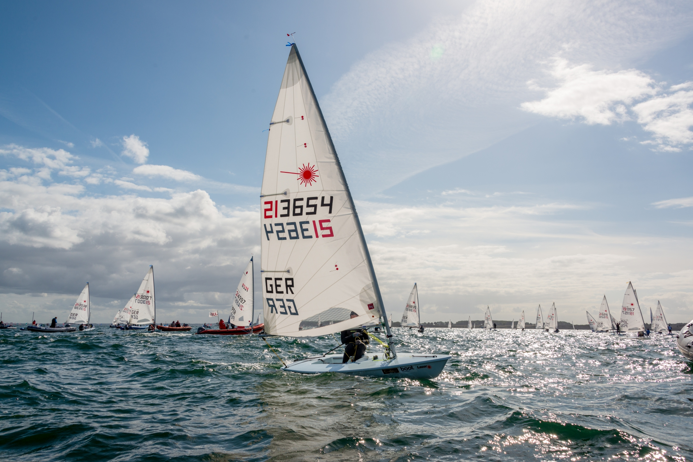

Laser / ILCA

Descrizione
Il Laser (oggi rinominato ILCA) è la deriva singola per adulti più famosa al mondo e una classe olimpica. È una barca tecnica, veloce e molto fisica, che premia la preparazione atletica e la sensibilità del timoniere. La sua particolarità è avere tre diverse vele (ILCA 4, 6, 7) da montare sullo stesso scafo per adattarsi al peso e alla forza del velista.
A chi è adatta?
Ideale per ragazzi e adulti che hanno completato il percorso sull'Optimist e cercano una sfida più competitiva. È la barca perfetta per chi ama l'agonismo e vuole mettersi alla prova in regate di alto livello.
| Scheda Tecnica (ILCA 7) | |
|---|---|
| Lunghezza fuori tutto | 4,20 m |
| Larghezza | 1,39 m |
| Superficie Velica | 7,06 m² |
| Peso Scafo | 59 kg |
| Equipaggio | 1 persona |